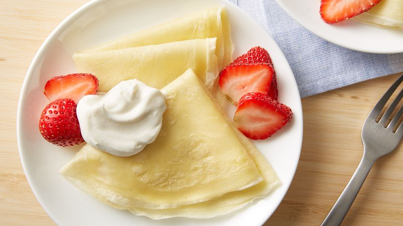

Basic Crepes

Description
Here is a simple but delicious crepe batter which can be made in minutes.
It's made from ingredients that everyone has on hand.
Wake that someone
special with a plate piled high of these deliciously simple crepes - they will ...
Ingredients
- 1 cup all-purpose flour
- 2 eggs
- ½ cup milk
- ½ cup water
- ¼ teaspoon salt
- 2 tablespoons butter, melted
Steps
- You can cook crepes in either a crepe pan or a 20cm (base measurement) non-stick frying pan
- MSift flour into a medium mixing bowl and make a well in centrePlace.
- Cover batter with plastic wrap and set aside at room temperature for 30 minutes
- TPreheat oven to 150°C. Line 2 baking trays with non-stick baking paper
- Use a metal spatula to gently lift the edge of
crepe to ensure it is light golden and lacy underneath.
- To serve, fold each crepe in half and then in half again to form triangles.